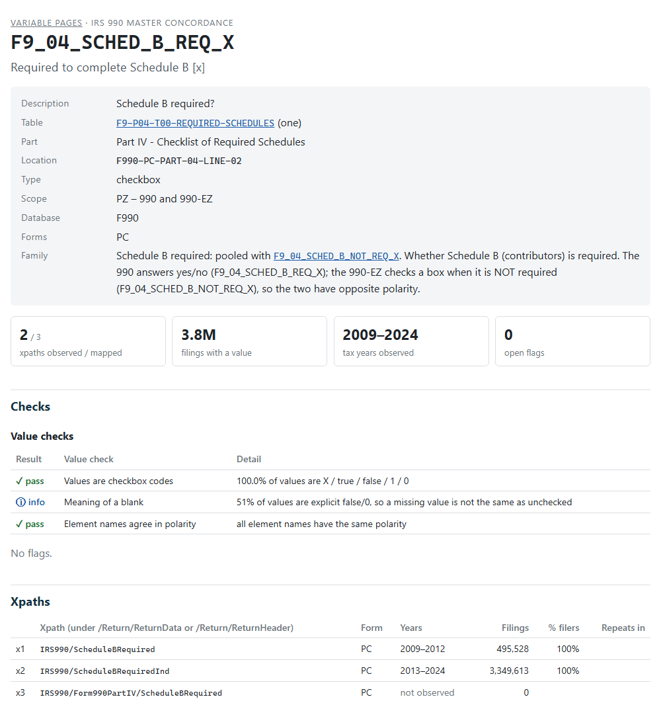

The data dictionary says what a variable should hold. The validation pages show what it does hold. There is one page for every variable in the 990 and 990-PF databases, built from the e-filed returns of tax years 2009-2024. Open a page when you have a question the dictionary can’t answer:
- Which xpaths feed this column, and in which years was each one used?
- Why is the variable empty in 2012, or for 990-EZ filers?
- Are the values dollars, a fraction or a percent? Text, or a code?
- Has anyone reviewed the flags on it, and what did they decide?
- What does a real filing look like? (Every page links to example XML.)
The pages are on the package website, starting from the index, which lists the forms and schedules. Each form’s index lists its variables by table.
Opening a page from R
dd() looks up the dictionary (see
vignette("looking-up-variables")). Add
report = TRUE to open the variable’s page in your
browser:
dd("F9_01_REV_TOT_CY", report = TRUE)For a table, report = TRUE opens the table’s section of
its form index, which lists every variable of the table and links to
each page:
dd("F9-P01-T00-SUMMARY", report = TRUE)variable_page_url() returns the address without opening
it:
variable_page_url("F9_01_REV_TOT_CY")
#> [1] "https://nonprofit-open-data-collective.github.io/concordance990/variables/F9/F9_01_REV_TOT_CY.html"
variable_page_url(table = "F9-P01-T00-SUMMARY")
#> [1] "https://nonprofit-open-data-collective.github.io/concordance990/variables/F9/index.html#f9-p01-t00-summary"Reading a page

A page has seven parts. The examples link to live pages.
1. The dictionary entry. The same attributes
dd() prints: description, table (linked to the dictionary),
part, location code, type, scope, the database and the return types the
xpaths come from. Variables pooled into a family of alternate versions
of one line link to each other, with the family’s definition (F9_04_SCHED_B_REQ_X).
2. Headline numbers. The xpaths observed in filings out of those mapped, the filings with a value, the tax years observed, and the open flags.
3. Checks. Two kinds:
- Value checks test the values against what the variable’s type implies. Amounts and numbers should parse as numbers, with no sudden change in the median between years, and pooled xpaths should be on one scale. Checkboxes should hold checkbox codes, with names that agree in polarity. Dates should use one format, identifiers the expected pattern, and codes a short list. Each check shows pass, warn, fail or info.
-
Flags test the mapping against the filings: two
xpaths of one variable filled in the same filing, opposite meanings
pooled, a value that repeats in a one-row table, years with no data.
Every flag shows the reviewer’s decision from
validation_log.csv: open, accepted (with the reviewer’s note; click note), needs input or deferred.
The checks and flags, with what each one tests:
| Check | Severity | What it means |
|---|---|---|
| COLLISION | error | Two xpaths of one variable filled in the same filing |
| POLARITY | error | Opposite meanings pooled |
| TYPE_CHECKBOX | error | Checkbox variable holds non-checkbox values |
| ROOT_MISMATCH | error | Xpath form does not match its table |
| TYPE_NUMERIC | warn | Numeric variable with non-numeric values |
| NAME_SUFFIX | warn | IRS element suffix disagrees with the data type |
| ONE_REPEATS | warn | Repeats within a filing in a one-to-one table |
| SCALE_BREAK | warn | Pooled xpaths on very different scales |
| GAP | warn | Variable missing in some years |
| INCIDENCE_BREAK | warn | Fill rate jumps between adjacent years |
| MANY_NOT_REPEATING | info | Many-to-one table, but the value never repeats |
| TYPE_TEXT_NUMERIC | info | Text variable whose values look like amounts |
| V_ID_TEXT | error | Identifier stored as a number |
| V_ID_FORMAT | warn | Identifier values have an unexpected format |
| V_ID_PLACEHOLDER | info | Placeholder identifiers |
| V_NUMBER_SCALE | error | Fractions pooled with percentages |
| V_POOLED_SCALE | warn | Pooled xpaths on different scales (3-10x) |
| V_MEDIAN_JUMP | info | Median changes sharply between adjacent years |
| V_DATE_FORMAT | warn | Mixed date formats |
| V_TEXT_NUMERIC | warn | Text variable holding numbers |
| V_CODE_LIST | info | Long code list |
| V_CODE_FORMAT | info | Codes in several formats |
| V_CODE_CASE | info | Lower-case codes |
A failed check is a question, not a verdict. SA_03_PCT_INVEST_INCOME_CY
(investment income percentage, Schedule A) fails Pooled xpaths are
on the same scale: the medians of its 2009-2012 and 2013-2024
xpaths differ 13x. The next check shows both xpaths are fractions (0-1),
and the value summary shows why the ratio is large: over half the values
are 0 and the median is near zero, so a small difference is a large
ratio. Nothing is wrong with the mapping.
4. Xpaths. Every xpath pooled into the variable,
oldest first, numbered x1, x2, … for the
coverage grid: the form, the years it appears in filings, the number of
filings, the percent of filers reporting it in its latest year
(% filers), and how often it repeats within a filing.
Xpaths not observed are in the IRS schemas but in no
filing.
5. Coverage by tax year. A grid of filings with a
value, by xpath (rows) and tax year (columns); hover a cell for the
exact count. A change of row from one year to the next is the IRS
renaming the element; most were renamed in 2013. Below it, the
fill rate: the share of all filings of each return type
that have a value. When several xpaths can sit in one filing (the Part
III programs, F9_03_PROG_DESC),
the fill rate counts the largest xpath, so it is a lower bound.
6. Values. A summary that fits the type:
| Type | Summary |
|---|---|
| amount, number | % numeric, zero and negative; 25th, 50th, 75th and 99th percentiles by return type |
| checkbox, code | the most common values and their shares (how a checkbox is coded:
X, true, 1, …) |
| date, identifier | the formats of the values (9 a digit, A a
letter): 99-9999999 for an EIN |
| text | average and longest length, and the most common values (boilerplate) |
7. Example filings. The most recent filing for each xpath, with the organization, the value and a link to the XML of the return on the IRS e-file data lake. This is the quickest way to see an xpath in context.
How the pages are built
The pages are built from the filing evidence:
counts, value summaries and example filings for every xpath in every tax
year, extracted from the ef2 DuckDB builds by
build_evidence(). The evidence is large (several GB) and is
not part of the package. data-raw/render-variable-pages.R
recomputes the flags for the current concordance and writes the
pages:
source("data-raw/render-variable-pages.R") # about 2 minutesEach page is a small static HTML file (median 9 KB, all pages about
33 MB) with no charting library: the coverage grid is a shaded table,
and all pages share one stylesheet. When the site is built, pkgdown adds
a Markdown copy of each page for AI tools (llms.txt; about
14 MB). The pages are in docs/variables/, one folder per
form or schedule prefix (F9, PF,
SA … SR); the largest folder has about 1,900
files, under GitHub’s recommended limit of 3,000 per folder. A rebuild
touches every page: commit it on its own, apart from code changes.
The full validation reports of render_reports() (charts,
every year in detail) are kept for reviewers; they are about 150 KB each
and are rendered for chosen variables only.